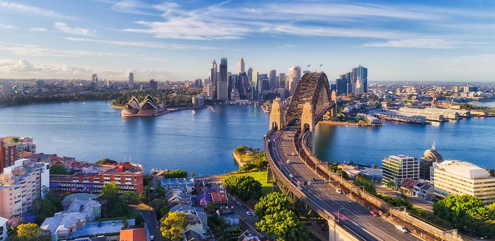

Tokio, Japon
Es la capital de Japon, un sitio muy turistico y bonito para visitar. Es una buena opcion si te gusta la cultura asiatica.


¿Quieres saber a donde ir de vacaciones? Descubre algunos sitios del mundo que puedes visitar. Puedes encontrar desde las ciudades mas visitadas del mundo, hasta zonas rurales como cascadas.
Es la capital de Japon, un sitio muy turistico y bonito para visitar. Es una buena opcion si te gusta la cultura asiatica.
Es la capital de Francia. Ademas, tambien es la ciudad mas visitada del mundo. Destaca la Torre Eiffel, estructura que se encuentra cerca al rio Sena.


A continuacion, dejo un enlace a la pagina web de la Torre Eiffel
El Gran Canon del Colorado es una formacion natural de capas de roca roja. Tiene una media de 16 km de ancho y 1,6 km de profundidad a lo largo de sus 446 km de longitud.
Santorini es un pequeno archipielago circular formado por islas volcanicas, ubicado en el sur del mar Egeo, a unos 200 km al sureste del territorio continental griego. Es un destino muy bonito para ir de vacaiones.
Barcelona, la capital cosmopolita de la region de Cataluna en Espana, es conocida por su arte y arquitectura. La iglesia de la Sagrada Familia y otros hitos modernistas disenados por Antoni Gaudi adornan la ciudad.

Haz clic en cualquier imagen para ir a la pagina web de la catedral de Barcelona.
Esta ciudad inca es el sitio arqueologico mas sobresaliente debido a su creativo diseno urbano, la belleza de su arquitectura y el fino trabajo en piedra de sus construcciones.
Sidney, capital de Nueva Gales del Sur y una de las ciudades mas grandes de Australia, es famosa por su Casa de la Opera de Sidney junto al puerto, con un caracteristico diseno con forma de velas.
Estas impresionantes cataratas se encuentran entre los paises de Brasil y Argentina. Estan formadas por 275 saltos de los cuales, el 80 % se ubican en Argentina.

En la siguiente tabla, puedes encontrar los 5 paises mas visitados del mundo.
| Top 5 paises mas visitados | |
| Pais | Turistas |
| Francia | 89 millones |
| Espana | 84 millones |
| Estados Unidos | 79 millones |
| China | 66 millones |
| Italia | 65 millones |
Para saber las webs utilizadas, pincha aqui.